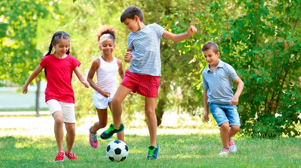

Acerca del Centro Deportivo Pataín
Somos un centro deportivo recientemente formado que busca incentivar a las personas a practicar algún tipo de deporte, para que de esta manera se pueda mejorar la salud de niños, jóvenes y adultos en la comunidad.

Misión
Mejorar la calidad de vida de la provincia de Cotopaxi, promoviendo, articulando y facilitando el desarrollo del deporte competitivo y recreativo como herramienta de cambio social, con una gestión comprometida con excelencia y mejora continua.

Visión
Ser un Centro de Formación permanente activo en varias disciplinas deportivas en el Cantón Salcedo de la provincia de Cotopaxi, consolidando los procesos de enseñanza y aprendizaje, fundamentación, perfeccionamiento y especialización como personas y deportistas.

Objetivos
- Fomentar la masificación de la práctica deportiva y recreativa en las diferentes Parroquias y barrios del Cantón Salcedo.
- Fomentar la masificación de la práctica deportiva y recreativa en las diferentes Parroquias y barrios del Cantón Salcedo.
- Implementar un mayor número de proyectos deportivos de varias disciplinas especiales a nivel nacional.
- Contribuir a la promoción de la cultura de la actividad física y deportiva de la provincia de Cotopaxi y del país.
- Brindar opciones de sano esparcimiento mediante el óptimo uso del tiempo libre.
Servicios
- Asesoría y organización de eventos recreativos/deportivos.
- Copa Pataín.
- Organización y supervisión de los Juegos Laborales, Juegos Tradicionales de la Parroquia de Panzaleo.
- Gimnastrada Patain.
- Festivales de destrezas para la captación de talentos.
- Implementación de proyectos especiales deportivos en zonas rurales del país.
- Asesorar a los gobiernos locales en la implementación y ejecución de las escuelas deportivas.
- Actividades Deportivas para el Adulto Mayor.